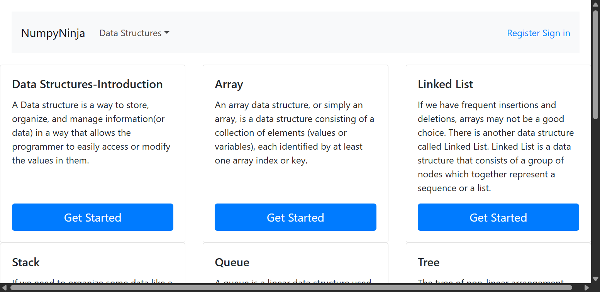
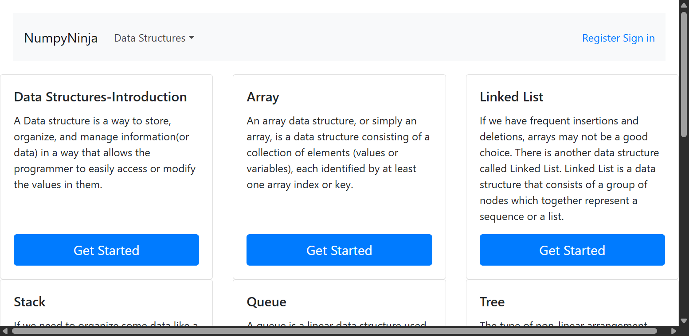
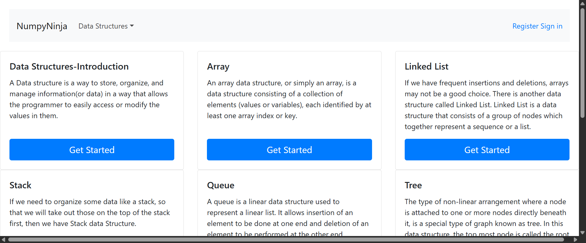
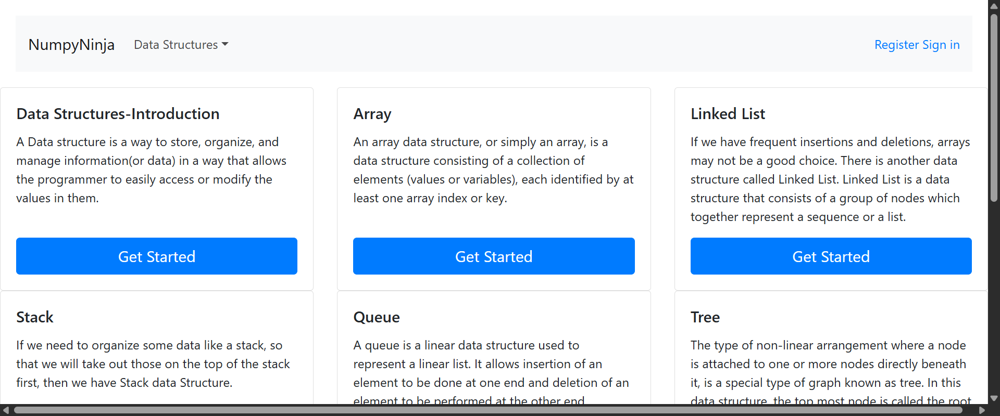

-
Home Page
11:02:16 PM / 00:01:04:481 Fail
Home Page
05.01.2025 11:02:16 PM 05.01.2025 11:03:21 PM 00:01:04:481 · #test-id=1PassVerify that the user can view Data Structures dropdown options without signing inGiven User is in the ds-algo launch pageWhen User clicks the Get Started buttonWhen User clicks on the Data Structures dropdownThen User should be able to see the options: Arrays, Linked List, Stack, Queue, Tree, Graph in the dropdown menuFailVerify warning message when selecting Arrays without signing inGiven User is in the ds-algo launch pageWhen User clicks the Get Started buttonWhen User selects Arrays from the dropdown without signing inThen User should be able to see a warning message You are not logged inHooks.Hooks.teardown(io.cucumber.java.Scenario)screenshot FailVerify warning message when selecting Linked List without signing inHooks.Hooks.setup()Given User is in the ds-algo launch pageStep skippedWhen User clicks the Get Started buttonStep skippedWhen User selects Linked List from the dropdown without signing inStep skippedThen User should be able to see a warning message You are not logged inStep skippedHooks.Hooks.teardown(io.cucumber.java.Scenario)FailVerify warning message when selecting Stack without signing inGiven User is in the ds-algo launch pageWhen User clicks the Get Started buttonWhen User selects Stack from the dropdown without signing inThen User should be able to see a warning message You are not logged inHooks.Hooks.teardown(io.cucumber.java.Scenario)screenshotFailVerify warning message when selecting Queue without signing inGiven User is in the ds-algo launch pageWhen User clicks the Get Started buttonWhen User selects Queue from the dropdown without signing inThen User should be able to see a warning message You are not logged inHooks.Hooks.teardown(io.cucumber.java.Scenario)screenshot
FailVerify warning message when selecting Linked List without signing inHooks.Hooks.setup()Given User is in the ds-algo launch pageStep skippedWhen User clicks the Get Started buttonStep skippedWhen User selects Linked List from the dropdown without signing inStep skippedThen User should be able to see a warning message You are not logged inStep skippedHooks.Hooks.teardown(io.cucumber.java.Scenario)FailVerify warning message when selecting Stack without signing inGiven User is in the ds-algo launch pageWhen User clicks the Get Started buttonWhen User selects Stack from the dropdown without signing inThen User should be able to see a warning message You are not logged inHooks.Hooks.teardown(io.cucumber.java.Scenario)screenshotFailVerify warning message when selecting Queue without signing inGiven User is in the ds-algo launch pageWhen User clicks the Get Started buttonWhen User selects Queue from the dropdown without signing inThen User should be able to see a warning message You are not logged inHooks.Hooks.teardown(io.cucumber.java.Scenario)screenshot FailVerify warning message when selecting Tree without signing inGiven User is in the ds-algo launch pageWhen User clicks the Get Started buttonWhen User selects Tree from the dropdown without signing inThen User should be able to see a warning message You are not logged inHooks.Hooks.teardown(io.cucumber.java.Scenario)screenshotFailVerify warning message when selecting Graph without signing inGiven User is in the ds-algo launch pageWhen User clicks the Get Started buttonWhen User selects Graph from the dropdown without signing inThen User should be able to see a warning message You are not logged inHooks.Hooks.teardown(io.cucumber.java.Scenario)screenshot
FailVerify warning message when selecting Tree without signing inGiven User is in the ds-algo launch pageWhen User clicks the Get Started buttonWhen User selects Tree from the dropdown without signing inThen User should be able to see a warning message You are not logged inHooks.Hooks.teardown(io.cucumber.java.Scenario)screenshotFailVerify warning message when selecting Graph without signing inGiven User is in the ds-algo launch pageWhen User clicks the Get Started buttonWhen User selects Graph from the dropdown without signing inThen User should be able to see a warning message You are not logged inHooks.Hooks.teardown(io.cucumber.java.Scenario)screenshot PassVerify that the user stays on the same page when clicking elsewhereGiven User is in the ds-algo launch pageWhen User clicks the Get Started buttonWhen User clicks on the launch page other than the Get StartedThen User should stay in the same launch page
PassVerify that the user stays on the same page when clicking elsewhereGiven User is in the ds-algo launch pageWhen User clicks the Get Started buttonWhen User clicks on the launch page other than the Get StartedThen User should stay in the same launch page
-
org.openqa.selenium.WebDriverException
1 tests
org.openqa.selenium.WebDriverException
1 failedStatus Timestamp TestName Fail 23:02:36 PM Hooks.Hooks.setup() Home Page.Verify warning message when selecting Linked List without signing in.Hooks.Hooks.setup() -
org.openqa.selenium.NoSuchSessionException
1 tests
org.openqa.selenium.NoSuchSessionException
1 failedStatus Timestamp TestName Fail 23:02:37 PM Hooks.Hooks.teardown(io.cucumber.java.Scenario) Home Page.Verify warning message when selecting Linked List without signing in.Hooks.Hooks.teardown(io.cucumber.java.Scenario) -
org.openqa.selenium.NoSuchElementException
5 tests
org.openqa.selenium.NoSuchElementException
5 failedStatus Timestamp TestName Fail 23:02:25 PM Then User should be able to see a warning message You are not logged in Home Page.Verify warning message when selecting Arrays without signing in.Then User should be able to see a warning message You are not logged inFail 23:02:38 PM Then User should be able to see a warning message You are not logged in Home Page.Verify warning message when selecting Stack without signing in.Then User should be able to see a warning message You are not logged inFail 23:02:41 PM Then User should be able to see a warning message You are not logged in Home Page.Verify warning message when selecting Queue without signing in.Then User should be able to see a warning message You are not logged inFail 23:02:54 PM Then User should be able to see a warning message You are not logged in Home Page.Verify warning message when selecting Tree without signing in.Then User should be able to see a warning message You are not logged inFail 23:03:06 PM Then User should be able to see a warning message You are not logged in Home Page.Verify warning message when selecting Graph without signing in.Then User should be able to see a warning message You are not logged in
Started
May 1, 2025 11:02:15 PM
Ended
May 1, 2025 11:03:21 PM
Features Passed
0
Features Failed
1
Features
Scenarios
Steps
Timeline
System/Environment
| Name | Value |
|---|---|
| Engineer | ClubNinjas |
| Project | DSAlgoProject |
| os | windows |